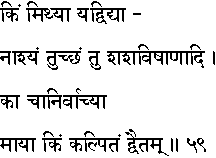
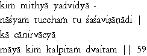

|

|
Verse 59 - Meaning:
Q:What (kim) is falsity (mithyaa) ?
A:That which disappears (yad-naasyam)without a residue when true knowledge (vidyaa) dawns.
Q:What (tu) is called a wordy fiction (tuccham) ?
A:The horn of a hare and similar other entities like sky-flower. (sasa-visaanaadi).
Q:What (ka-ca) is it that cannot be determined as true or untrue (anirvaacyaa) ?
A:It is "Maayaa" which is just a superimposition but non-existent.
Q:What (kim) is the superimposed (kalpitam) ?
A:It is the aspect of Duality.(dvaitam)
|